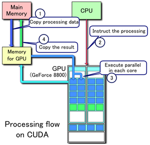

What is CUDA?
CUDA is Nvidia’s proprietary GPU architecture and API that enables developers to harness the computational power of Nvidia’s graphics cards for general purpose computing. Leveraging the computational horsepower of the GPU, developers can accelerate programs and simulations often to be hundreds of times faster using modern graphics cards when compared to fully utilized CPU chips.

The CUDA platform is designed to be programmable with a variant of the C programming language called CUDA C. Wrappers for the CUDA API function calls and data structures have also been created for Fortran, Java, Lua, MATLAB, Perl, Python, Ruby and R. By partitioning processing workloads into discrete units of work, GPUs can provide: vastly accelerated:
- Physics simulations
- Wave transforms
- Large List Sorts
- Basic Linear Algebra
- Image Processing